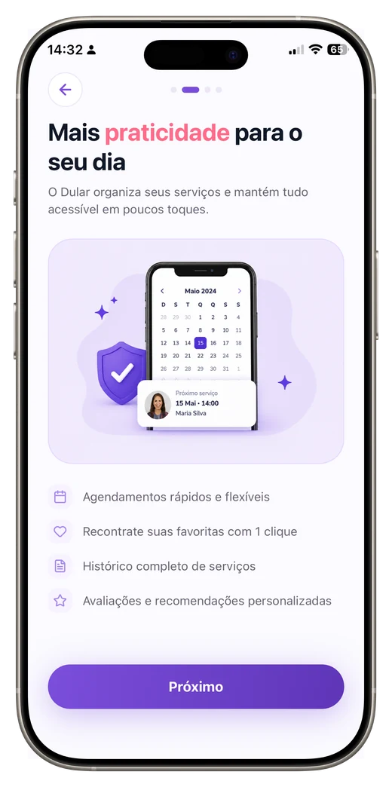
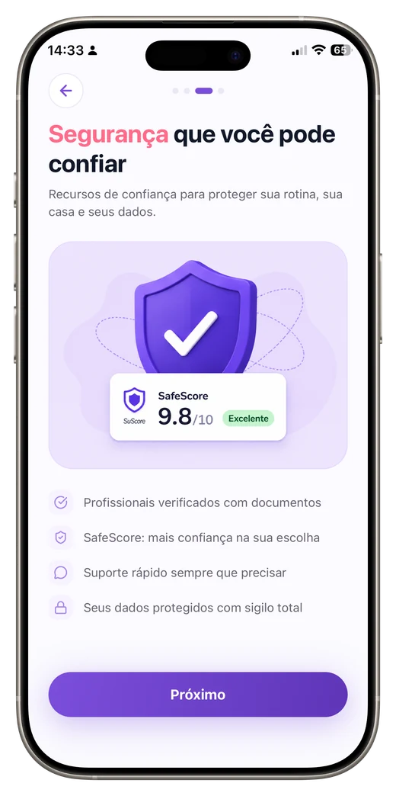
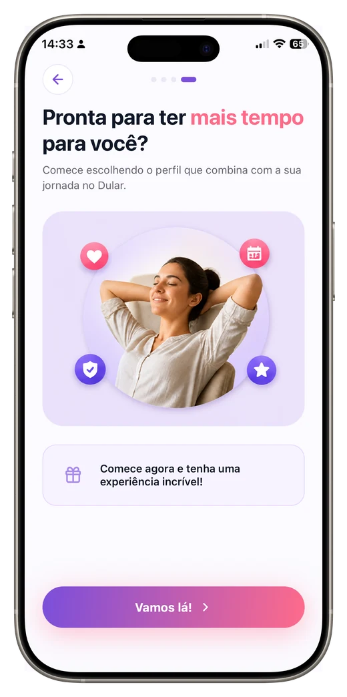

O Dular conecta você a diaristas e montadores verificados da sua região — com perfis avaliados, atendimento local e pagamento por PIX.
A versão para iPhone chega com a publicação nas lojas. Veja a política de privacidade.
O primeiro acesso explica o essencial e já leva você ao seu perfil. Sem cadastro longo, sem formulário interminável.
Uma forma mais simples, segura e acolhedora de cuidar da rotina da sua casa.

Agendamento rápido, recontratação das favoritas em um clique e histórico completo.

Profissionais verificados por documento e o SafeScore para orientar a sua escolha.

Escolha o perfil que combina com a sua jornada e comece a usar na hora.
Seja para contratar ou para trabalhar, o Dular foi feito para autônomos e para quem precisa deles.
Encontre diaristas e montadores verificados perto de você, veja avaliações e contrate com segurança.
Ofereça seus serviços, defina seus preços e receba novos clientes da sua cidade — com pagamento por PIX.
Ganhe visibilidade oferecendo montagem de móveis e serviços para empregadores da sua região.
Você entra com a conta que já usa, e as duas pontas do serviço passam pela mesma verificação.
Profissionais passam por verificação de documentos antes de aparecer para contratação.
Empregadores e profissionais se avaliam depois de cada serviço, construindo reputação de verdade.
O pagamento é direto entre você e o profissional, com a confirmação registrada no app.
Encontre quem atende o seu bairro. Começamos por Água Boa – MT e vamos crescendo por perto.
Já disponível para Android. A versão para iPhone chega junto com a publicação nas lojas.
No Android o sistema pede permissão para instalar fora da Play Store — é o comportamento normal nesse caso.